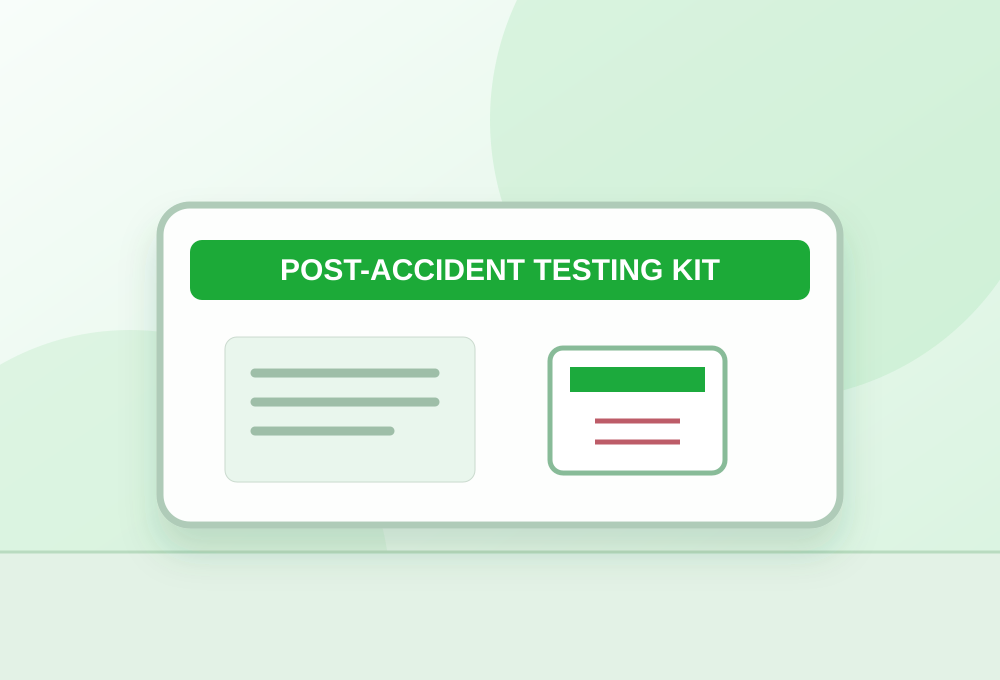

POST-ACCIDENT INTAKEDocument the event.
Document the event.
Follow the right process.
Use the detailed intake checklist to prepare a testing request. The secure submission connection has not yet been enabled.

EZ SCREENING · TESTING SOLUTIONS
Important: In an emergency, call 911 and follow employer safety protocols. Do not delay time-sensitive testing to complete this website form. Nothing entered on this form is submitted or saved.